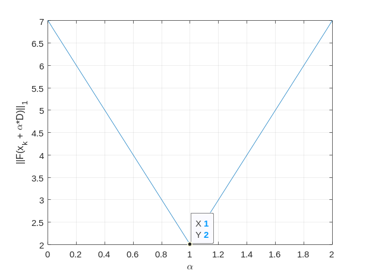
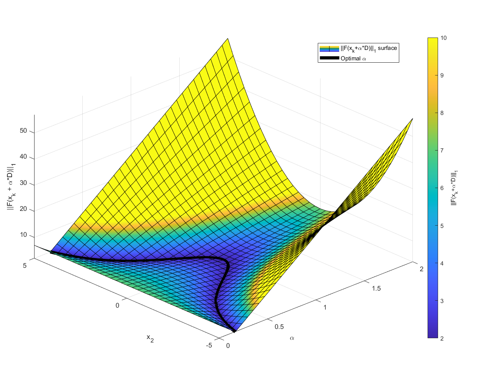
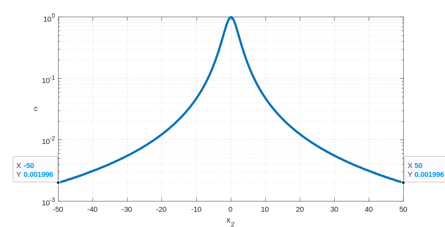

Nonlinear Equation System Solving Using Newton, Line Search, and LU factorization
Summary
A couple of weeks ago, I was inspired to revisit Newton's method for solving nonlinear equations. I was reminded of my undergrad days when I read a paper by Madsen and Reid about finding the roots of a polynomial. What struck me at that time is Madsen-Reid's application of Newton's method with a line search was faster than any other algorithm. The Madsen-Reid papers were written in 1973 and 1975. Ever since then, when another paper benchmarked various algorithms to find roots of polynomials, Madsen-Reid would win; to my knowledge, if root-finding of polynomials is benchmarked in literature and the Fortran Madsen-Reid algorithm (PA16 and/or PA17) is used, the Madsen-Reid algorithm is the fastest and nearly the most accurate. What made the algorithm so successful? How can this generalize to solving a set of nonlinear equations? In this post, I plan to discuss these ideas.
Note that I have a little math syntax but not as much as you would find in a math article or paper. This means my language is a little more inexact and high level without explaining all the detail.
The Madsen-Reid Algorithm
The Madsen-Reid algorithm can be summarized as follows:
Calculate a newton direction \(d = - {f'}^{- 1}f\). Do a line search along the \(d\) direction to find where \(|f|\) is the smallest. However, don't find the minimum perfectly. Instead, quit after \(|f|\) isn't decreasing in a sequence of new guesses along \(d\). This is called "stage 1."
Switch to pure newton iteration based on checking an inequality that ensures convergence. This is called "stage 2" pure Newton iteration. If the inequality fails, go back to stage 1.
The beauty of the Madsen-Reid algorithm is that it is
Fast
Simple
Guaranteed quadratic convergence even to roots with multiplicities greater than 1 because of stage 1 line search. Guaranteed quadratic convergence is rare.
Link to a paper describing the Madsen-Reid algorithm: https://apps.dtic.mil/sti/pdfs/ADA278422.pdf
C++ implementation of Madsen-Reid algorithm: http://www.hvks.com/Numerical/ports.html
Fortran code PA16 and PA17 can be found at https://www.hsl.rl.ac.uk/catalogue/
Nonlinear Equation Systems, Convex Optimization
Newton iteration with a line search has shown up a lot since Madsen-Reid in optimization and root finding of nonlinear equation systems. It isn't necessarily because of Madsen-Reid that Newton's method with line search is broadly used. The reason, in my opinion, is different researchers or practitioners have found that Newton's method with line search is highly effective.
The parallels between Newton iteration with line search in optimization and nonlinear equation solving are:
| Unconstrained convex optimization (minimization) | Nonlinear equation system |
|---|---|
Cost = F(x) Where
| You can think of the cost as Cost= ||F(x)||1 Where
|
The gradient is 0 at minimum \[\frac{\partial F}{\partial x} = 0\] Where \(\frac{\partial F}{\partial x}\) is a vector value function of the x vector. | F(x) = 0 Where
|
The Newton iteration with line search is xk + 1 = xk + αD \[D = \left( \frac{\partial^{2}F}{\partial x^{2}} \right)^{- 1}\left( - \frac{\partial F}{\partial x} \right)\] where
| The Newton iteration with line search is xk + 1 = xk + αD \[D = \left( \frac{\partial\ F}{\partial x} \right)^{- 1}( - F)\] Where
|
The guarantee of convergence of the newton iteration with line search is
| I am not sure what the guarantee of convergence is for Newton iteration in the nonlinear system case. As far as I know, \(\frac{\partial\ F}{\partial x}\) needs to be invertible, thus nonsingular. I think that is the only requirement. However, we would like to find a way for it to still work if \(\frac{\partial\ F}{\partial x}\) is sometimes singular. This what we want to explore in the below sections. |
LU factorization musings related to newton iteration
When solving for the direction, \(D\),
\[J = \frac{\partial F}{\partial x}\] \[JD = - F\]The \(LU\) factorization with partial pivoting of \(J\) is the best approach to solve this linear system of equations. In MATLAB, \(D = J\backslash - F\) does the \(LU\) factorization with partial pivoting underneath the hood similar to this:
[L,U,p] = lu(J,'vector');
y = L\-F(p,:);
D = U\y;If instead of using a backslash, we do the \(LU\) factorization with partial pivoting ourselves, we can discover when the Jacobian is ill-conditioned by looking at the diagonal of the upper triangular matrix \(U\). Let's look at this in an example before going further.
% this will produce an ill-conditioned A. It has rank of 2.
A = gallery('chebspec',3,0)
A =
1.5 -2 0.5
0.5 0 -0.5
-0.5 2 -1.5
[L,U,P] = lu(A)
L =
1 0 0
-0.33333 1 0
0.33333 0.5 1
U =
1.5 -2 0.5
0 1.3333 -1.3333
0 0 -1.1102e-16
P =
1 0 0
0 0 1
0 1 0The U(3,3) is very small. It is close to 0, which implies that \(A\) is singular within double floating-point precision. U(3,3) very small leads me to my point: Can we use this? Can we eliminate columns and rows from the Jacobian holding constant the value of corresponding value in \(x\) at the current iteration to find a valid search direction?
Let's explore this. We need a toy problem to work with. Here is one:
\[F(x) = \begin{bmatrix} x_{1}^{3}\arctan\left( x_{2} \right) - 2 \\ x_{1} + x_{2}^{2} - 5 \end{bmatrix}\] \[x = \begin{bmatrix} x_{1} \\ x_{2} \end{bmatrix}\]The Jacobian is then:
\[\frac{\partial F}{\partial x} = J = \begin{bmatrix} 3x_{1}^{2}\arctan\left( x_{2} \right) & \frac{x_{1}^{3}}{x_{2}^{2}\ + \ 1} \\ 1 & 2x_{2} \end{bmatrix}\]This \(F\) was chosen so there was a saddle point at \(x_{1} = 0\) and \(x_{2} = 0\). Note that this \(F\) has other problems, such as horizontal asymptotes in arctan that cause the newton iteration to have problems. This is on purpose, and the line search should take care of problems created by arctan.
There are several cases to analyze:
What do we do if we started from or land on \(x\ = \ \lbrack 0,0\rbrack^{T}\)?
We start or land on \(x = \left\lbrack 0,x_{2} \neq 0 \right\rbrack^{T}\).
We are close to \(x = \left\lbrack \epsilon,x_{2} \right\rbrack^{T}\) where \(\epsilon\) is a small number making the Jacobian ill-conditioned but not singular according to MATLAB.
Case 1, \(x = \lbrack 0,0\rbrack^{T}\)
\(F\) and J are
\[F = \left\lbrack \begin{matrix} - 2 \\ - 5 \end{matrix}\ \right\rbrack\] \[J = \begin{bmatrix} 0 & 0 \\ 1 & 0 \end{bmatrix}\]If we explicitly write out the equations for \(D\) we get:
\[{0*D_{1} + 0*D_{2} = 2 }{1*D_{1} + 0*D_{2} = 5}\]The \(LU\) with partial pivoting is
\[L = \begin{bmatrix} 1 & 0 \\ 0 & 1 \end{bmatrix}\] \[U = \begin{bmatrix} 1 & 0 \\ 0 & 0 \end{bmatrix}\] \[P = \begin{bmatrix} 0 & 1 \\ 1 & 0 \end{bmatrix}\]Since \(U(2,2)\) is 0, the Jacobian is singular. The last column of \(P\) tells us what equation we can eliminate. In this case, we can eliminate the first equation. I think that the \(P(1,2)\) implies that the second column can be eliminated; this is more easily seen in explicitly writing out the equations for \(D\) above. Thus, we have
\[1*D_{1} = 5 \]and we replace the column that we lost with
\[D_{2} = 0\]We can see what our direction should be is
\[D = \begin{bmatrix} 5 \\ 0 \end{bmatrix}\]However, we need to work this out from the \(LU\) factorization so we can use it more generally later. We replace the second column of U with 1 on the diagonal. The new \(U\) is
\[U = \begin{bmatrix} 1 & 0 \\ 0 & 1 \end{bmatrix}\]We need to replace the last row of \(L\) with one on the diagonal. The new \(L\) is
\[L = \begin{bmatrix} 1 & 0 \\ 0 & 1 \end{bmatrix}\]\(P\) does not change. However, the second row of \(PF\) changes to 0. The new \(P( - F)\) is
\[P( - F) = \begin{bmatrix} 5 \\ 0 \end{bmatrix}\]At this point, we carry out the equations to solve the linear system.
\[y = L^{- 1}P( - F) = \begin{bmatrix} 1 & 0 \\ 0 & 1 \end{bmatrix}\begin{bmatrix} 5 \\ 0 \end{bmatrix} = \begin{bmatrix} 5 \\ 0 \end{bmatrix}\] \[D = U^{- 1}y = \begin{bmatrix} 1 & 0 \\ 0 & 1 \end{bmatrix}\begin{bmatrix} 5 \\ 0 \end{bmatrix} = \begin{bmatrix} 5 \\ 0 \end{bmatrix}\]Now we have a direction. The question is, does it take us in a direction that makes any sense? If we look at the line search, we get the graph below. The \(\alpha = 1\) seems to be the best choice.

The next guess is
\[x_{k + 1} = \begin{bmatrix} 0 \\ 0 \end{bmatrix} + 1\begin{bmatrix} 5 \\ 0 \end{bmatrix} = \begin{bmatrix} 5 \\ 0 \end{bmatrix}\]And the corresponding \(F\) is
\[F_{k + 1} = \begin{bmatrix} - 2 \\ 0 \end{bmatrix}\]The Jacobian is
\[J_{k + 1} = \begin{bmatrix} 0 & 125 \\ 1 & 0 \end{bmatrix}\]\(LU\) factorization with partial pivoting is
\[L_{k + 1} = \begin{bmatrix} 1 & 0 \\ 0 & 1 \end{bmatrix}\] \[U_{k + 1} = \begin{bmatrix} 1 & 0 \\ 0 & 125 \end{bmatrix}\] \[P_{k + 1} = \begin{bmatrix} 0 & 1 \\ 1 & 0 \end{bmatrix}\]The diagonals of \(U\) are not zero, so the Jacobian is not singular.
The initial finding here is we CAN use the \(LU\) decomposition to find a search direction even when we are on a saddle point. This is good news! More work is needed with a bigger system of equations to see if we can always do this.
Case 2, \(x = \left\lbrack 0,x_{2} \neq 0 \right\rbrack^{T}\ \)
\(F\) and \(J\) are
\[F = \left\lbrack \begin{matrix} - 2 \\ - x_{2}^{2} - 5 \end{matrix}\ \right\rbrack\] \[J = \begin{bmatrix} 0 & 0 \\ 1 & 2x_{2} \end{bmatrix}\]If we explicitly write out the equations for \(D\) we get:
\[0*D_{1} + 0*D_{2} = 2\] \[1*D_{1} + 2x_{2}*D_{2} = x_{2}^{2} + 5\]The \(LU\) with partial pivoting is
\[L = \begin{bmatrix} 1 & 0 \\ 0 & 1 \end{bmatrix}\] \[U = \begin{bmatrix} 1 & 2x_{2} \\ 0 & 0 \end{bmatrix}\] \[P = \begin{bmatrix} 0 & 1 \\ 1 & 0 \end{bmatrix}\]At this point, we eliminate the first equation and second column. The new \(L\), \(U\), \(P\), and \(P( - F)\) are
\[L = \begin{bmatrix} 1 & 0 \\ 0 & 1 \end{bmatrix}\] \[U = \begin{bmatrix} 1 & 0 \\ 0 & 1 \end{bmatrix}\] \[P = \begin{bmatrix} 0 & 1 \\ 1 & 0 \end{bmatrix}\] \[P( - F) = \begin{bmatrix} x_{2}^{2} + 5 \\ 0 \end{bmatrix}\]At this point, we carry out the equations to solve the linear system.
\[y = L^{- 1}PF = \begin{bmatrix} 1 & 0 \\ 0 & 1 \end{bmatrix}\begin{bmatrix} x_{2}^{2} + 5 \\ 0 \end{bmatrix} = \begin{bmatrix} x_{2}^{2} + 5 \\ 0 \end{bmatrix}\] \[D = U^{- 1}y = \begin{bmatrix} 1 & 0 \\ 0 & 1 \end{bmatrix}\begin{bmatrix} x_{2}^{2} + 5 \\ 0 \end{bmatrix} = \begin{bmatrix} x_{2}^{2} + 5 \\ 0 \end{bmatrix}\]Now we have a direction. The question is, does it take us in a direction that makes any sense? If we look at the line search, we get the graph below. Note, several different views are displayed because of the 3d nature of the graph. The answer is we can always take a direction that makes sense based on the direction found.


If we plot \(x_{2}\) vs. \(\alpha\) we get:

If we expand out the graph above for large values of \(x_{2}\) we see that \(\alpha\) is heading towards 0 (shown below). In the limit \(x_{2}\) goes to infinity, \(\alpha\) will go to 0. This tends to point to situations where the ill-conditioning of finding a new \(x_{k + 1}\). When \(\alpha D\) is near working precision of \(x_{k}\), then \(x_{k + 1} = x_{k}\) to working precision. This would cause the Newton iteration to quit near a saddle point rather than near a solution of the nonlinear system of equations. We may have to detect this case by finding the singularity of the Jacobian from the LU factorization. We will need to search an arbitrary direction to get us off this ill-conditioned point.

With our direction \(D\), the \(x_{k + 1\ }\) is
\[x_{k + 1} = \begin{bmatrix} 0 \\ x_{2} \end{bmatrix} + \alpha\begin{bmatrix} x_{2}^{2} + 5 \\ 0 \end{bmatrix} = \begin{bmatrix} \alpha\left( x_{2}^{2} + 5 \right) \\ x_{2} \end{bmatrix}\]The machine double precision of \(x_{1} = 0\) is
\[eps(0) = 4.9407*10^{- 324}\]This means that \(\alpha\left( x_{2}^{2} + 5 \right)\) would have to be near \(eps(0)\) for us to not find a new point, \(x_{k + 1}\). \(\alpha\) can be very small and it will still have an impact in this case. For instance, when \(\alpha = 10^{- 16}\), \(x_{2} = 2.236082770647552*10^{8}\), \(x_{k + 1} = \lbrack 5.000066157186832,\ 2.236082770647552*10^{8}\rbrack\) which is still better than what we had before. More investigation is still warranted, but I am less concerned after looking at an example.
Similar to case 1, we CAN take a step in a direction that makes sense. We may need to refine this at some point because of floating-point precision. For now, though, floating-point precision is not a problem for this case.
Case 3, \(x = \left\lbrack \epsilon,x_{2} \right\rbrack^{T}\)
\(F\) and \(J\) are
\[F(x) = \begin{bmatrix} \epsilon^{3}\arctan\left( x_{2} \right) - 2 \\ \epsilon + x_{2}^{2} - 5 \end{bmatrix}\] \[J = \begin{bmatrix} 3\epsilon^{2}\arctan\left( x_{2} \right) & \frac{\epsilon^{3}}{x_{2}^{2}\ + \ 1} \\ 1 & 2x_{2} \end{bmatrix}\]If we explicitly write out the equations for \(D\) we get:
\[{3\epsilon^{2}\arctan\left( x_{2} \right)*D_{1} + \frac{\epsilon^{3}}{x_{2}^{2}\ + \ 1}*D_{2} = - \epsilon^{3}\arctan\left( x_{2} \right) + 2 }{1*D_{1} + 2x_{2}*D_{2} = - \epsilon + x_{2}^{2} + 5}\]Through a bit of experiment with \(x_{2} = 1\) and trying to find when \(J\) becomes rank 1 according to MATLAB, \(\epsilon = 2*10^{- 8}\) is rank 2 while \(\epsilon = 1*10^{- 8}\) is rank 1.
For the case that \(\epsilon = 2*10^{- 8}\) and \(x_{2} = 1\), the \(LU\) factorization yields:
\[L = \begin{bmatrix} 1 & 0 \\ 9.42477796076938*10^{- 16} & 1 \end{bmatrix}\] \[U = \begin{bmatrix} 1 & 2 \\ 0 & - 1.88495558815388*10^{- 15} \end{bmatrix}\] \[P = \begin{bmatrix} 0 & 1 \\ 1 & 0 \end{bmatrix}\]If we missed this as a singular case, we would get a direction of
\[y = L^{- 1}P( - F) = \begin{bmatrix} 1 & 0 \\ - 9.42477796076938*10^{- 16} & 1 \end{bmatrix}\begin{bmatrix} 0 & 1 \\ 1 & 0 \end{bmatrix}\begin{bmatrix} - 2 \\ - 3.999999980000000 \end{bmatrix} = \begin{bmatrix} 3.99999998 \\ 1.999999999999996 \end{bmatrix}\] \[{D = U^{- 1}y = \begin{bmatrix} 1 & 1.061032956197551*10^{15} \\ 0 & - 5.305164780987754*10^{14} \end{bmatrix}\begin{bmatrix} 3.99999998 \\ 1.999999999999996 \end{bmatrix} }{= \begin{bmatrix} 2.122065912395102*10^{15} \\ - 1.061032956197549*10^{15} \end{bmatrix}}\]This direction is enormous in magnitude. It seems like it could cause problems. However, the line search keeps this from getting worse. For the above \(D\), \(\alpha = 7.82707232360737*10^{- 16}\). The line search saves the day. This is what makes the Newton iteration with line search so robust. Even with a huge Newton direction, we can take an appropriate step because of the line search.
\[{x_{k + 1} = x_{k} + \alpha D = \begin{bmatrix} 2*10^{- 8} \\ 1 \end{bmatrix} + 7.82707232360737*10^{- 16}\begin{bmatrix} 2.122065912395102*10^{15} \\ - 1.061032956197549*10^{15} \end{bmatrix} }{= \begin{bmatrix} 1.660956357177832 \\ 0.169521831411085 \end{bmatrix}}\] \[F\left( x_{k + 1} \right) = \begin{bmatrix} - 1.230531207840158 \\ - 3.310305991497200 \end{bmatrix}\] \[\left| \left| F\left( x_{k + 1} \right) \right| \right|_{1} = 4.54083719933736\]While
\[\left| \left| F\left( x_{k} \right) \right| \right|_{1} = 5.999999980000000\]In case 3, we CAN take a step that makes sense. The line search is the star of the show. It prevents us from taking too big of a step.
What's Next?
I need to
Write a MATLAB function for Newton iteration with line search and LU factorization to recognize singularity.
Implement a line search using a quadratic interpolation to find the step size, \(\alpha\). This will be key. Madsen-Reid's line search would also work.
I need to add inequality constraints. This will most likely add some Lagrange multipliers or something similar. This will be needed especially for functions like log where crossing a vertical asymptote is a terrible idea. This will be needed when we want one particular solution and don't want to cross into the basin of attraction to another solution.
Write this in Simulink so that it can be compiled to code and even work on fixed-point types.
This will require using some custom LU code. See the examples of the Fixed-point types for MATLAB functions.
Conclusion
Newton iteration with a line search with \(LU\) factorization to find the singular case looks to be a very robust nonlinear equation solver.
CC BY-SA 4.0 Jason H. Nicholson. Last modified: November 22, 2025. Website built with Franklin.jl and the Julia programming language.